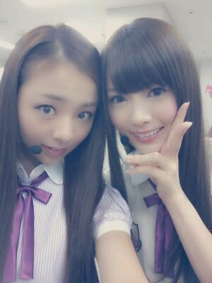
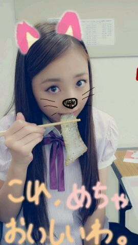

| 2012/10 15 Mon | 川村真洋 サード最後の全国握手会。ろって ぃー☆ |
ほっほーーーぃ☆
ろってぃーだよぉ*^^*
昨日は 全国握手会
お疲れ様でしたぁ*´∀`*
ファンの皆様,
スタッフの皆様
メンバーのみんな
ありがとおございます。
握手会のペアは
可愛い可愛い
とっても可愛い
まいやん♪とだったよ〃ω〃
始まる前に写真撮ったの(・ω・)
いぇぃ。

まいやん と ろってぃー♪
だぁ〜い好きっ*^^*
本当にねっ,
まいやん♪とやりやすかったよ^^
まいやん♪
ありがとう=・ω・=
そして,
ろってぃ〜むの皆様ぁ〜
相変わらず
めちゃくちゃ暖かい人の
かたまりだったってばよ★☆★!
本当にありがとうございます〃_〃
昨日は初めての方が
多くて
『ろってぃーむ。には
どうしたら入れるのですか?』
とゆう質問が多かったのですが
もうねえ、
みんな ろってぃーむ。
だよっ(・∀・)
ろってぃーと喋った時点で
はいっ ! ろってぃーむ。決まり。
*・ω・)...
え? それは強制的過ぎる?笑
それに
まいやん推しの皆様*^^*
昨日は 本当に
優しくしてくださって
すごく嬉しかったです。
えっ? めちゃいい人ばっかやん
・∀・
ん、てか いい人しか
いない*・ω・*
って思ってました^^
なんか 皆いっぱい話てくれたし
オススメの料理店とか
聞きすぎて
何から検索していこうかと
思ったよ・∀・))笑
あ〜 ラーメンかあ
あ〜 焼肉かあ
あ〜 味噌かつかあ,
...
あ、それに
陰ナレのことも
いっぱい言ってくれて
ありがとう・ω・
てかっ,
どんなだったあ?
自分喋ってたけど
会場の方でどんな感じ
に聞こえてたんだろう・∀・
そして、
そんなかんぢゃってたあ´・ω?
勝手に言えた気になってたら
かみかみ だった...´・∀
ういぇ〜い ♪
ライブも握手会も
本当楽しかったです。
幸せな時間を
本当にありがとう*^^*
あと,昼御飯は
大好きなシャケのかわ。

おやすみなさい (⌒‐⌒)のし